I’m very pleased to announce the release of ggplot2 2.0.0. I know I promised that there wouldn’t be any more updates, but while working on the 2nd edition of the ggplot2 book, I just couldn’t stop myself from fixing some long standing problems.
On the scale of ggplot2 releases, this one is huge with over one hundred fixes and improvements. This might break some of your existing code (although I’ve tried to minimise breakage as much as possible), but I hope the new features make up for any short term hassle. This blog post documents the most important changes:
ggplot2 now has an official extension mechanism.
There are a handful of new geoms, and updates to existing geoms.
The default appearance has been thoroughly tweaked so most plots should look better.
Facets have a much richer set of labelling options.
The documentation has been overhauled to be more helpful, and require less integration across multiple pages.
A number of older and less used features have been deprecated.
These are described in more detail below. See the release notes for a complete list of all changes.
Perhaps the bigggest news in this release is that ggplot2 now has an official extension mechanism. This means that others can now easily create their on stats, geoms and positions, and provide them in other packages. This should allow the ggplot2 community to flourish, even as less development work happens in ggplot2 itself. See vignette("extending-ggplot2") for details.
Coupled with this change, ggplot2 no longer uses proto or reference classes. Instead, we now use ggproto, a new OO system designed specifically for ggplot2. Unlike proto and RC, ggproto supports clean cross-package inheritance, which is necessary for extensibility. Creating a new OO system isn’t usually the right solution, but I’m pretty sure it was necessary here. Read more about it in the vignette.
ggplot no longer throws an error if you your plot has no layers. Instead it automatically adds geom_blank():
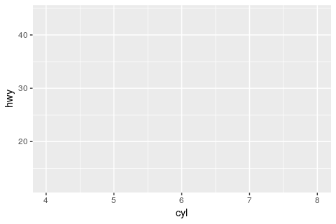
geom_count() (a new alias for the old stat_sum()) counts the number of points at unique locations on a scatterplot, and maps the size of the point to the count:
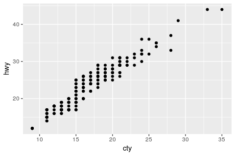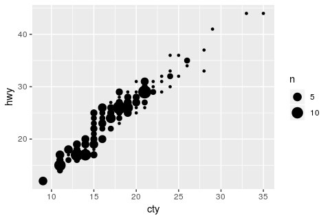
geom_curve() draws curved lines in the same way that geom_segment() draws straight lines:
df <- expand.grid(x = 1:2, y = 1:2)
ggplot(df, aes(x, y, xend = x + 0.5, yend = y + 0.5)) +
geom_curve(aes(colour = "curve")) +
geom_segment(aes(colour = "segment"))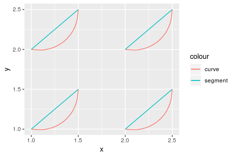
geom_bar() now behaves differently from geom_histogram(). Instead of binning the data, it counts the number of unique observations at each location:
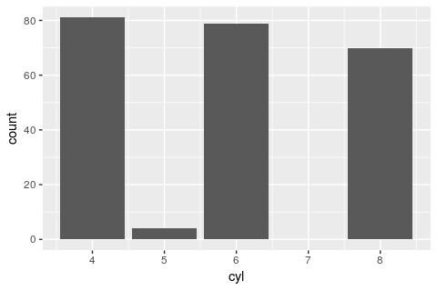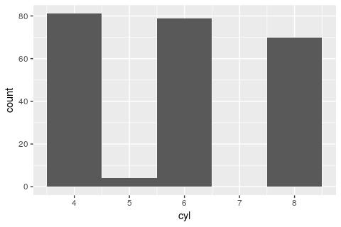
If you got into the (bad) habit of using geom_histogram() to create bar charts, or geom_bar() to create histograms, you’ll need to switch.
Layers are now much stricter about their arguments - you will get an error if you’ve supplied an argument that isn’t an aesthetic or a parameter. This breaks the handful of geoms/stats that used ... to pass additional arguments on to the underlying computation. Now geom_smooth()/stat_smooth() and geom_quantile()/stat_quantile() use method.args instead; and stat_summary(), stat_summary_hex(), and stat_summary2d() use fun.args. This is likely to cause some short-term pain but in the long-term it will make it much easier to spot spelling mistakes and other errors.
geom_text() has been overhauled to make labelling your data a little easier. You can use nudge_x and nudge_y arguments to offset labels from their corresponding points. check_overlap = TRUE provides a simple way to avoid overplotting of labels: labels that would otherwise overlap are omitted.
ggplot(mtcars, aes(wt, mpg, label = rownames(mtcars))) +
geom_point() +
geom_text(nudge_y = 0.5, check_overlap = TRUE)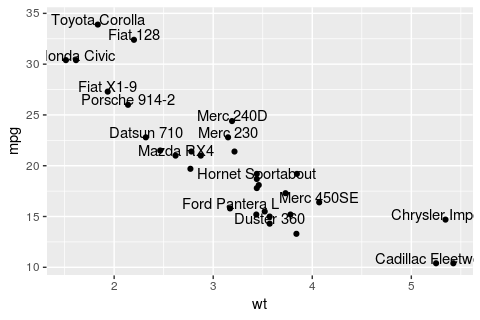
(Labelling points well is still a huge pain, but at least these new features make life a lit better.)
geom_label() works like geom_text() but draws a rounded rectangle underneath each label:
grid <- expand.grid(
x = seq(-pi, pi, length = 50),
y = seq(-pi, pi, length = 50)
) %>% mutate(r = x ^ 2 + y ^ 2, z = cos(r ^ 2) * exp(-r / 6))
ggplot(grid, aes(x, y)) +
geom_raster(aes(fill = z)) +
geom_label(data = data.frame(x = 0, y = 0), label = "Center") +
theme(legend.position = "none") +
coord_fixed()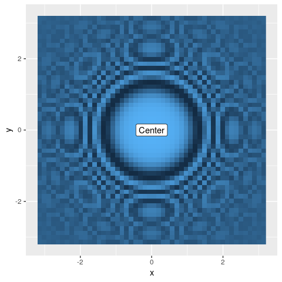
aes_() replaces aes_q(), and works like the SE functions in dplyr and my other recent packages. It supports formulas, so the most concise SE version of aes(carat, price) is now aes_(~carat, ~price). You may want to use this form in packages, as it will avoid spurious R CMD check warnings about undefined global variables.
I’ve made a number of small tweaks to the default appearance:
The default theme_grey() background colour has been changed from “grey90” to “grey92”: this makes the background a little less visually prominent.
Labels and titles have been tweaked for readability. Axis labels are darker, and legend titles get the same visual treatment as axis labels.
The default font size dropped from 12 to 11. You might be surprised that I’ve made the default text size smaller as it was already hard for many people to read. It turns out there was a bug in RStudio (fixed in 0.99.724), that shrunk the text of all grid based graphics. Once that was resolved the defaults seemed too big to my eyes.
scale_size() now maps values to area, not radius. Use scale_radius() if you want the old behaviour (not recommended, except perhaps for lines). Continue to use scale_size_area() if you want 0 values to have 0 area.
Bar and rectangle legends no longer get a diagonal line. Instead, the border has been tweaked to make it visible, and more closely match the size of line drawn on the plot.
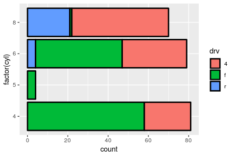
geom_point() now uses shape 19 instead of 16. This looks much better on the default Linux graphics device. (It’s very slightly smaller than the old point, but it shouldn’t affect any graphics significantly). You can now control the width of the outline on shapes 21-25 with the stroke parameter.
The default legend will now allocate multiple rows (if vertical) or columns (if horizontal) in order to make a legend that is more likely to fit on the screen. You can override with the nrow/ncol arguments to guide_legend()
p <- ggplot(mpg, aes(displ,hwy, colour = manufacturer)) +
geom_point() +
theme(legend.position = "bottom")
p
# Revert back to previous behaviour
p + guides(colour = guide_legend(nrow = 1))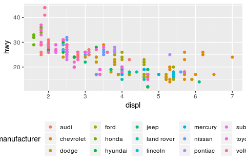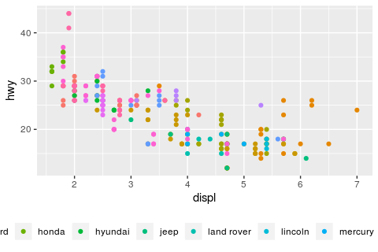
Two new themes were contributed by Jean-Olivier Irisson: theme_void() is completely empty and theme_dark() has a dark background designed to make colours pop out.
Thanks to the work of Lionel Henry, facet labels have received three major improvements:
You can switch the position of facet labels so they’re next to the axes.
facet_wrap() now supports custom labellers.
You can create combined labels when faceting by multiple variables.
The new switch argument allows you to switch the labels to display near the axes:
data <- transform(mtcars,
am = factor(am, levels = 0:1, c("Automatic", "Manual")),
gear = factor(gear, levels = 3:5, labels = c("Three", "Four", "Five"))
)
ggplot(data, aes(mpg, disp)) +
geom_point() +
facet_grid(am ~ gear, switch = "both")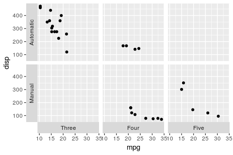
This is especially useful when the labels directly characterise the axes. In that situation, switching the labels can make the plot clearer and more readable. You may also want to use a neutral label background by setting strip.background to element_blank():
data <- mtcars %>%
mutate(
Logarithmic = log(mpg),
Inverse = 1 / mpg,
Cubic = mpg ^ 3,
Original = mpg
) %>% tidyr::gather(transformation, mpg2, Logarithmic:Original)
ggplot(data, aes(mpg2, disp)) +
geom_point() +
facet_wrap(~transformation, scales = "free", switch = "x") +
theme(strip.background = element_blank())
#> Warning: 'switch' is deprecated.
#> Use 'strip.position' instead.
#> See help("Deprecated")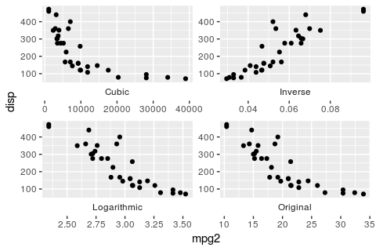
A longstanding issue in ggplot was that facet_wrap() did not support custom labellers. Labellers are small functions that make it easy to customise the labels. You can now supply labellers to both wrap and grid facets:
ggplot(data, aes(mpg2, disp)) +
geom_point() +
facet_wrap(~transformation, scales = "free", labeller = "label_both")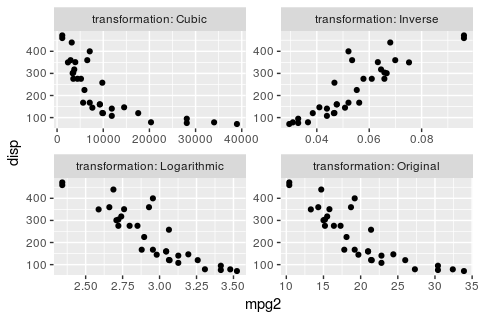
Labellers have now better support for composite margins when you facet over multiple variable with +. All labellers gain a multi_line argument to control whether labels should be displayed as a single line or over multiple lines, one for each factor.
The labellers still work the same way except for label_bquote(). That labeller makes it easy to write mathematical expression involving the values of facetted factors. Historically, label_bquote() could only specify a single expression for all margins and factor. The factor value was referred to via the backquoted placeholder .(x). Now that it supports expressions combining multiple factors, you must backquote the variable names themselves. In addition, you can provide different expressions for each margin:
my_labeller <- label_bquote(
rows = .(am) / alpha,
cols = .(vs) ^ .(cyl)
)
ggplot(mtcars, aes(wt, mpg)) +
geom_point() +
facet_grid(am ~ vs + cyl, labeller = my_labeller)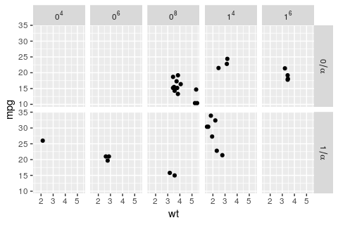
I’ve given the documentation a thorough overhaul:
Tighly linked geoms and stats (e.g. geom_boxplot() and stat_boxplot()) are now documented in the same file so you can see all the arguments in one place. Similarly, variations on a theme (like geom_path(), geom_line(), and geom_step()) are documented together.
I’ve tried to reduce the use of ... so that you can see all the documentation in one place rather than having to follow links around. In some cases this has involved adding additional arguments to geoms to make it more clear what you can do.
Thanks to Bob Rudis, the use of qplot() in examples has been grealy reduced. This is inline with the 2nd edition of the ggplot2 book, which eliminates qplot() in favour of ggplot().
The order aesthetic is officially deprecated. It never really worked, and was poorly documented.
The stat and position arguments to qplot() have been deprecated. qplot() is designed for quick plots - if you need to specify position or stat, use ggplot() instead.
The theme setting axis.ticks.margin has been deprecated: now use the margin property of axis.text.
stat_abline(), stat_hline() and stat_vline() have been removed: these were never suitable for use other than with their corresponding geoms and were not documented.
show_guide has been renamed to show.legend: this more accurately reflects what it does (controls appearance of layer in legend), and uses the same convention as other ggplot2 arguments (i.e. a . between names). (Yes, I know that’s inconsistent with function names (which use _) but it’s too late to change now.)
A number of geoms have been renamed to be more consistent. The previous names will continue to work for the forseeable future, but you should switch to the new names for new work.
stat_binhex() and stat_bin2d() have been renamed to stat_bin_hex() and stat_bin_2d(). stat_summary2d() has been renamed to stat_summary_2d(), geom_density2d()/stat_density2d() has been renamed to geom_density_2d()/stat_density_2d().
stat_spoke() is now geom_spoke() since I realised it’s a reparameterisation of geom_segment().
stat_bindot() has been removed because it’s so tightly coupled to geom_dotplot(). If you happened to use stat_bindot(), just change to geom_dotplot().
All defunct functions have been removed.